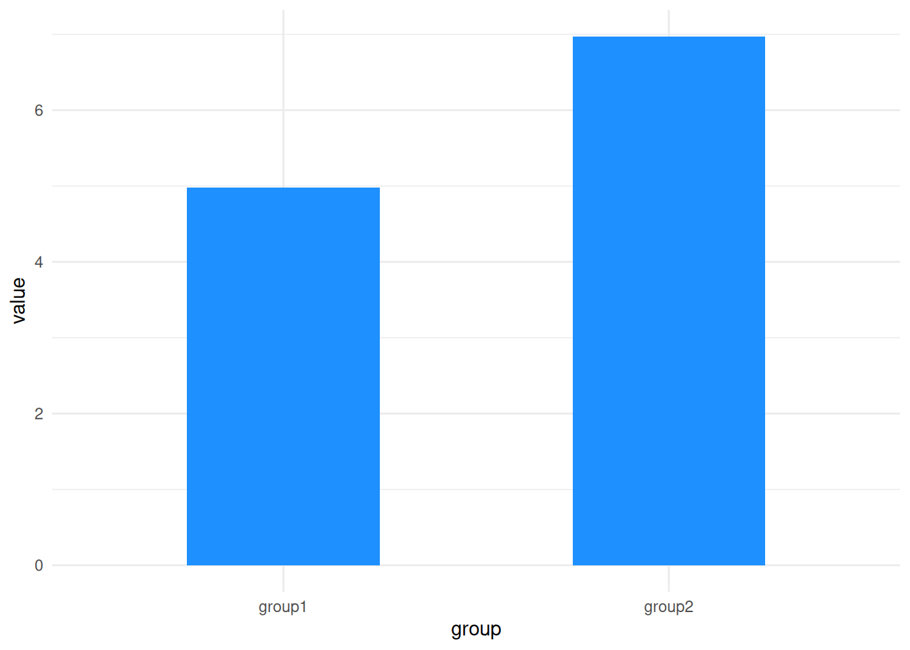
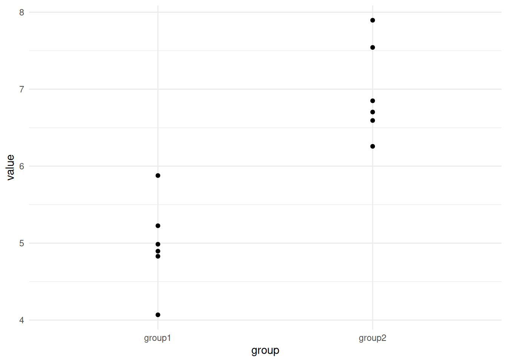
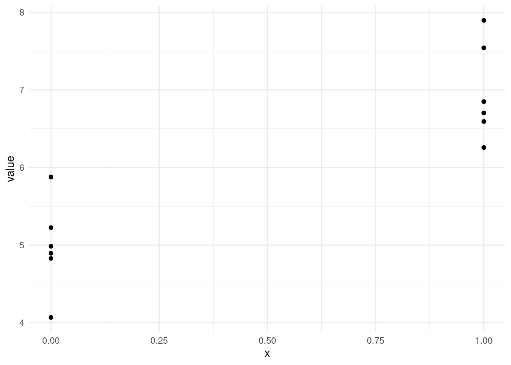
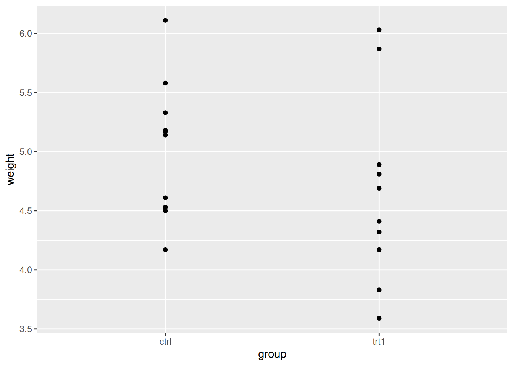
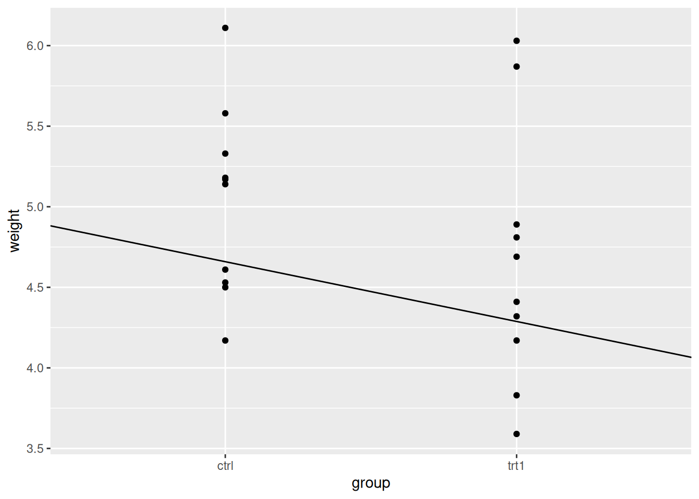
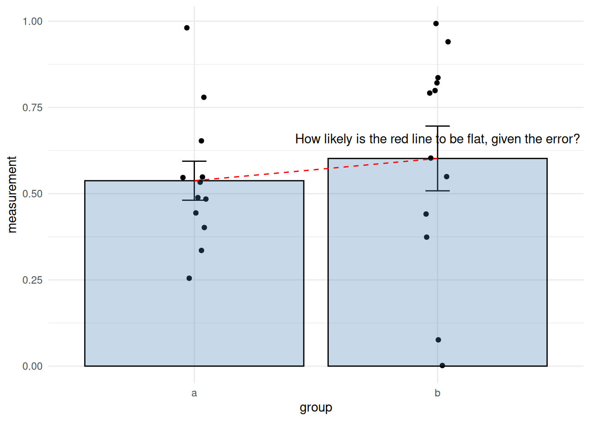

3 \(t\)-tests and linear models
- Questions
- How can we compare two samples using a linear model?
- Objectives
- Learn how to set up some categoric \(x\) data in the
lm()function - Understand how the coefficient relates to our conceptual slope
- Understand how the \(t\) and \(p\) values of the linear model tell us about significance
- Keypoints
- Using categoric \(x\) data is the same as using continuous \(x\) data
- The \(p\) value of the coefficient tests the same thing as a \(t\)-test
In this section we’ll look at how the linear model can be used as a conceptual tool to understand the sort of comparison a \(t\)-test does and as a straightforward way to perform a hypothesis test.
3.1 Recap
Because I like hammering this point home, Im going to recap two important points from our earlier work on linear models.
- The slope of the model is the important thing
- ‘Significance’ tests only test whether the difference between two things is ‘probably not 0’
3.1.1 The slope of the model again
Recall the simplified linear model equation we developed
\[\begin{equation} y = ax + b \end{equation}\]
and that if we let the coefficient \(a = 0\), the effect of \(x\) disappears
\[\begin{equation} y = 0 x + b\\ y = b \end{equation}\]
So the logical conclusion is that if we have a coefficient that is non-zero, we have a relationship/effect of \(x\) on \(y\).
It is this property that lets us use the linear model to work out whether there is a significant difference between groups. That is to say we can use it as a \(t\)-test!
3.2 Using two different samples instead of a continuous \(x\) variable
The second we try to apply what we’ve learned with the linear model to a two-sample dataset we hit an apparent problem because we’ve learned how to make linear models from datasets with a continuous, numeric \(x\)-axis, but the data we have for a \(t\)-test has a very different two category look, something like these here:
library(itssl)
continuous_x <- its_random_xy_time(20)
its_plot_xy_time(continuous_x)
categoric_x <- its_bardata_time()
its_barplot_time(categoric_x)

Rest assured, the problem isn’t insurmountable. We need to do a couple of numeric tricks to get this to work like the continuous data, and they’re fairly easy, so let’s run through them,
The first step is to realise that although we are used to thinking of the each of the bars representing a single number, that single number is (almost always) a summary, like a mean of replicate values, so let’s go back to those source numbers as a first step and plot those, here are some examples
| group1 | group2 |
|---|---|
| 4.895422 | 6.849330 |
| 5.225740 | 6.257527 |
| 4.828976 | 6.703222 |
| 5.878021 | 6.593268 |
| 4.068426 | 7.895864 |
| 4.985580 | 7.542633 |

plotting gives us something a lot more like the scatter plot we need for the model as we’ve been thinking about it, but it isn’t quite clear how the categorical \(x\) becomes numeric. To do this we simply select a number for each group, so our data will look like this
library(dplyr)
long_x <- its_wide_to_long_time(categoric_x) %>%
mutate(x = if_else(group == "group1",0,1))
its_table_time(long_x)| group | value | x |
|---|---|---|
| group1 | 4.895422 | 0 |
| group2 | 6.849330 | 1 |
| group1 | 5.225740 | 0 |
| group2 | 6.257527 | 1 |
| group1 | 4.828976 | 0 |
| group2 | 6.703222 | 1 |
| group1 | 5.878021 | 0 |
| group2 | 6.593268 | 1 |
| group1 | 4.068426 | 0 |
| group2 | 7.895864 | 1 |
| group1 | 4.985580 | 0 |
| group2 | 7.542633 | 1 |
So now we can make a plot with two numeric axes, that looks a lot more like the one we’re expecting for our model
library(ggplot2)
ggplot(long_x) + aes(x, value) + geom_point() + theme_minimal() 
albeit with the \(x\)-values in two places on the \(x\)-axis - its enough for us to make a slope on the line between the two groups and that means that we can use the linear model for the categoric data, as we did for the continuous.
If this seems like a bit of a ‘hack’ then I’d agree. However, this is part of the numeric bookkeeping that we often have to do in statistics. Its not wrong and ‘hacks’ are usually just pragmatic and useful solutions to problems, this one is completely mathematically legitimate as well as useful.
And if this change in the data reminds you of tidy data we’ve used in other courses, like dplyr, then that is no accident. Tidy data is designed to make this sort of analysis easy to work through, at least as far as organising the data goes.
The good news is that once we have our data set up with a category and value column, the lm() function just deals with assigning the numbers for us, we don’t have to worry, the problem of continuous or categoric \(x\)-axes just disappears! All you need to know is that under the hood the linear model uses numbers for categories instead of words to make things easy.
Now that we understand how we can use categoric data in a linear model, let’s get to the point of this chapter and work through an example of a linear model based hypothesis test for differences between two groups that functions as a \(t\)-test.
3.3 The PlantGrowth data
R comes with lots of datasets built in. One if these is PlantGrowth, which describes the dry weight of plants in grams in replicated measurements in a control and two treatments. We can load it with data() and get a summary()
data("PlantGrowth")
summary(PlantGrowth) weight group
Min. :3.590 ctrl:10
1st Qu.:4.550 trt1:10
Median :5.155 trt2:10
Mean :5.073
3rd Qu.:5.530
Max. :6.310 head(PlantGrowth) weight group
1 4.17 ctrl
2 5.58 ctrl
3 5.18 ctrl
4 6.11 ctrl
5 4.50 ctrl
6 4.61 ctrlWe have three groups and one measurement. The \(x\) values would come from the group column (and we now know that because it is categoric rather than continuous we needn’t worry, the model functions will just do the conversion for us). And of course the \(y\) values would come from the weight column.
In linear modelling jargon, the \(x\) values are called the independent or explanatory variable, simply because this is the one we changed over the course of the experiment. The \(y\) values are called the dependent or response variables as this is the one that responds or changes according to the changes in the independent variable.
For simplicity at this stage we’ll work with two groups only. Let’s remove trt2.
two_groups <- its_remove_a_group_time(PlantGrowth)
summary(two_groups) weight group
Min. :3.590 ctrl:10
1st Qu.:4.388 trt1:10
Median :4.750
Mean :4.846
3rd Qu.:5.218
Max. :6.110 With that done, we can look at the categorical scatter plot.
library(ggplot2)
p <- ggplot(two_groups) + aes(group, weight) + geom_point()
p
We can clearly see the weight spread in each group. By eye we can see that the groups overlap in the \(y\)-axis (weight) quite considerably, though trt1 seems to have a couple of data points that are lower.
3.4 A linear model with a categoric \(x\)-axis
Let’s make the linear model and get the intercept and coefficient of the line. This can be done with lm() as we did before.
two_groups_model <- lm(weight ~ group, data = two_groups)
two_groups_model
Call:
lm(formula = weight ~ group, data = two_groups)
Coefficients:
(Intercept) grouptrt1
5.032 -0.371 That calculates easily! The lm() isn’t worried by the fact that one of our variables is categoric. It knows all the levels of the group variable and gives us the intercept and coefficient as it did before.
3.5 Using the statistics of the linear model to test for differences
Now we have a categoric linear model built we can start to look at how to use it to check for differences between the groups.
summary(two_groups_model)
Call:
lm(formula = weight ~ group, data = two_groups)
Residuals:
Min 1Q Median 3Q Max
-1.0710 -0.4938 0.0685 0.2462 1.3690
Coefficients:
Estimate Std. Error t value Pr(>|t|)
(Intercept) 5.0320 0.2202 22.850 9.55e-15 ***
grouptrt1 -0.3710 0.3114 -1.191 0.249
---
Signif. codes: 0 '***' 0.001 '**' 0.01 '*' 0.05 '.' 0.1 ' ' 1
Residual standard error: 0.6964 on 18 degrees of freedom
Multiple R-squared: 0.07308, Adjusted R-squared: 0.02158
F-statistic: 1.419 on 1 and 18 DF, p-value: 0.249From the output we can see the coefficient isn’t huge, only about 1/3 of a gram decrease as we change along the \(x\) axis by one unit. Saying change along the axis by one unit in categoric axes sounds a bit strange, but in the categoric data it just means switching from one group to the next. Recall that we put one group at 0 and the second at 1 when we were doing the numeric ‘hack’ above, the distance between the groups is defined as 1, so it all makes sense to say ’a change along the \(x\) by one unit. Lets add the line to the plot and have a look.
p + geom_abline(intercept = 5.03, slope = -0.371)
Just looking at the plot makes the line seem more substantial than it is. Looking at the \(y\)-axis and the places where the line intercepts with the categories then we can see the difference is close to the coefficient.
3.5.1 The coefficient and the mean difference between groups are equivalent
Before we move along with our model, we should look at that coefficient of the group variable a bit more. As we’re moving from the ctrl to treatment groups the coefficient tells us the size of the change. So does this mean that the coefficient is equivalent to other measures by which we can tell the difference in two groups - is it, for example equivalent to calculating the difference in the means of the groups? Short answer is yes! Let’s look at that, recalling that the coefficient is -0.371.
First get the means of the groups using a little dplyr
mean_two_groups <- two_groups %>%
group_by(group) %>%
summarize(mean_wt = mean(weight))
mean_two_groups# A tibble: 2 × 2
group mean_wt
<fct> <dbl>
1 ctrl 5.03
2 trt1 4.66Now calculate the difference
5.03 - 4.66[1] 0.37There you have it, the absolute values of each are very similar. You can use the coefficient as a way of finding the difference between the groups. Another handy feature of the linear model.
3.5.2 The \(p\)-value of the coefficient tests the same thing as a \(t\)-test
We already know that the \(Pr(>|t|)\) value (\(p\)-value of the coefficient) tells us the probability that we would see the slope observed or greater in random samples if the real difference were 0. The two-sample \(t\)-test reports the probability that we would see the difference in means observed if the real difference were 0. So the two are very similar, the question is are they similar enough as a replacement?
The \(p\)-value for the coefficient in the linear model was 0.249. How does this compare with a \(t\)-test?
t.test(weight ~ group, data = two_groups)
Welch Two Sample t-test
data: weight by group
t = 1.1913, df = 16.524, p-value = 0.2504
alternative hypothesis: true difference in means between group ctrl and group trt1 is not equal to 0
95 percent confidence interval:
-0.2875162 1.0295162
sample estimates:
mean in group ctrl mean in group trt1
5.032 4.661 It is extremely close! In fact, as the sample size increases and gets over about 15 it gets to be exact. So this is useful, we can use the linear model slope and \(p\)-value as a mental and practical alternative for thinking about the more complicated to understand \(t\)-test. We can use the linear model instead of the \(t\)-test if we want to.
All you have to understand is that you are looking at the slope of the line between the groups. If you don’t see a slope of that size very often, then you can say its not likely that there’s no difference 1
3.6 Summary
Hopefully, this plot summarises how to look for differences between two groups using a linear model quite succinctly.
- Think of the line between the mean of the groups
- Does the \(p\)-value tell you that you don’t see a slope of this size often in the assumed Null Model.
So you just need the coefficient and the \(p\)-value from the linear model. When we’re thinking of the coefficient of the linear model for differences we’re just asking something very similar to whether the line that joins the two means has a non-zero slope, given the error.
In a hypothesis test way, what we’re asking amounts to the following two hypotheses:
- A flat line with slope of zero is equivalent to the Null hypothesis
- \(H_{0}\) the group means are equal
- A \(p\)-value that suggests the slope is rare is equivalent to the Alternative hypothesis
- \(H_{1}\) the group means are not equal
and it can be summarised verbally as in this diagram

3.7 But wasn’t the \(t\)-test just easier?
In the sloped line / linear model process we’ve been learning we used the t.test() function to calculate the \(p\)-value that tested the hypothesis that the true difference in the means between groups was 0. This was pretty easy and we didn’t have to think too hard, we just got the result. Why wouldn’t we stick to just using that, especially if it’s equivalent to the linear model? There’s no definitive reason, the \(t\)-test is a perfectly good tool, and it’s a great one to use. Don’t feel like I’m telling you not to use the \(t\)-test.
The focus of this whole tutorial is to give you a way to think of statistical techniques that is generally useful. Because the linear model provides a general answer to all these sorts of questions - one small set of techniques is re-usable lots of times, so the idea goes that in lots of experiments the statistics become a lot easier to understand. I hope I’m not confusing the two intents. If you’ve followed the logic of the straight line and slope and the linear model and can use it to inform your \(t\)-test usage in the future, then we’re in good shape.
The general applicability of the straight line and linear model concept comes in handy when comparing more than two groups. Looking at effects in these experiments is basically the same thing as doing just two, though traditionally we’d use a seemingly very different sort of test - ANOVA. We’ll look at that in the next section.
Roundup
- A linear model can be used as a \(t\)-test
- Using the linear model rather than the \(t\)-test gives us a more consistent and flexible framework to think about differences between groups
For you to do
Work through the tutorial below — the code runs in your browser. Type your answer and press Run; use Show solution if you get stuck.
We’ve seen how the slope, its gradient, and the statistics from a linear model give us a test for differences that is the same as a \(t\)-test. Let’s use the penguins data set to examine differences in bill size between two penguin species. A cut-down version, penguins_small (just the species and bill_length_mm columns, for the Adelie and Chinstrap species), is already set up for you.
3.7.1 Examining the data
Examine the penguins_small data with str().
str(penguins_small)
str(penguins_small)How many experimental groups are there?
✗1
✓2
✗3
Why?
A two-sample \(t\)-test needs two groups — here, the two penguin species.
Get a summary of the data per group by modifying the code below.
penguins_small %>%
group_by(species) %>%
summarize(mean_bill_length = mean(bill_length_mm, na.rm = TRUE),
sd_bill_length = sd(bill_length_mm, na.rm = TRUE))
penguins_small %>%
group_by(species) %>%
summarize(mean_bill_length = mean(bill_length_mm, na.rm = TRUE),
sd_bill_length = sd(bill_length_mm, na.rm = TRUE))3.7.2 \(t\)-tests
Build a linear model suitable for the penguins_small data set, and generate a summary of it.
model <- lm(bill_length_mm ~ species, data = penguins_small)
summary(model)
model <- lm(bill_length_mm ~ species, data = penguins_small)
summary(model)Recall that the \(F\) statistic indicates the strength of the relationship between \(x\) and \(y\) — the size of, and fit to, the slope — which together indicate a real difference between the groups.
What is the \(F\)-statistic between these groups?
✓566.5
✗38.7914
✗10.0424
Is this a strong \(F\) value? Which of these statements is most true?
✗It is low, there isn’t evidence of differences.
✗It is moderate, there is some relationship and some difference between the groups.
✓Yes, there is a good relationship and likely a real difference.
Why?
Remember \(F\) is a ratio; moving above 1 indicates a relationship, and this \(F\) value is a long way over 1.
Remember that the coefficient tells us about the change in \(y\) per unit increase in \(x\). In our two-group situation we set things up so the distance on the \(x\)-axis between groups is 1.
What is the size difference between the bills of the two penguin types?
✗Chinstrap is bigger than Adelie by 10.0424 cm
✗Adelie is bigger than Chinstrap by 38.7914 mm
✓Adelie is smaller than Chinstrap by 10.0424 mm
✗Adelie is smaller than Chinstrap by 38.7914 mm
Why?
The speciesChinstrap coefficient is 10.0424 — how much bigger, in mm, Chinstrap bills are than Adelie. (The 38.7914 is the intercept — the mean Adelie bill length — not a difference. And watch your units: it’s mm, not cm.)
What is the \(p\)-value for the likelihood that a size difference this large occurs by chance under a Null Model?
✓\(< 2.2 \times 10^{-16}\)
✗0.723
✗0.728
Why? (and a word about that number)
< 2.2e-16 is one of those numbers you’ll meet a lot in R. It’s roughly the smallest difference R’s arithmetic can tell apart from zero — the limit of the double-precision numbers R works with (.Machine$double.eps). So R isn’t reporting an exact probability here; it’s really saying “smaller than I can reliably measure”. For a \(p\)-value that’s usually good news — the result is vanishingly unlikely under the null. But because it’s R bumping into its precision floor rather than a measured value, treat it as a nudge to sanity-check: glance over the rest of the output and make sure nothing has gone numerically wrong, rather than reading the exact figure too literally.
Is this value significant?
✗YES!
✗No.
✓Yes, but no.
Why?
This \(p\)-value would be significant at \(0.05\) — but we never set a significance level beforehand. A \(p\)-value can only be called significant when compared to a level we decided on in advance (e.g. 0.05, accepting a 1-in-20 error rate). Choosing that level after seeing the \(p\)-value isn’t playing fair.
Again this is weak inference, but that’s this type of statistics for you!↩︎